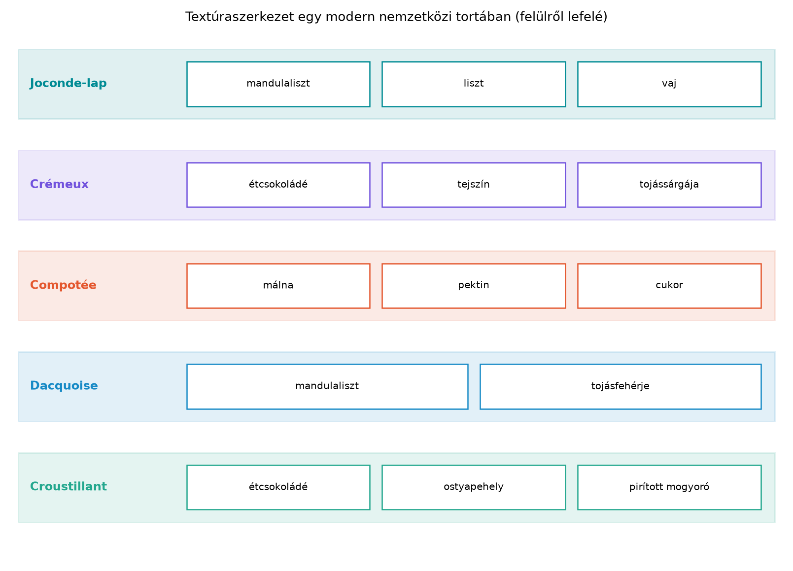
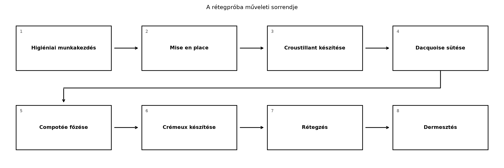

Egy modern cukrászüzemben a vendég nemcsak egy „kakaós krémes tortát” kér, hanem olyan szeletet, amelyben egyszerre van puha mandulás lap, selymes csokoládékrém, enyhén savanykás gyümölcsréteg és vékony, ropogós alap. Ugyanez a kérdés jön elő a szakmai vizsgán is: hogyan építed fel a tortát úgy, hogy a metszete szép, a rétegek ne csússzanak szét, és a termék fagyasztva is megtartsa az állagát? Ebben az alfejezetben a nemzetközi cukrászat alapvető tészta- és betétrendszerét tanulod meg: milyen rétegek léteznek, miből készülnek, és hogyan tervezed meg a textúraszerkezetet.
A tésztaalapok és betétek ismerete nélkül a modern torták, szeletek és desszertek összeállítása terv nélküli próbálkozás lesz. Ha érted, hogy a dacquoise miért száraz és rugalmas, a crémeux miért nem folyik szét, és a croustillant miért marad ropogós, akkor a későbbi nemzetközi torták, szeletek és desszertek összeállítása alfejezetben már csak a bevonással és a díszítéssel kell foglalkoznod.
Képzelj el egy 16 cm-es tortát. A metszetet felülről lefelé olvasva ilyen rétegeket látsz; legalul a ropogós alap van:

A rajz jól mutatja, hogy a jó modern torta nem egyetlen tészta + egyetlen krém, hanem ellentétes textúrák tudatos váltakozása: ropogós – puha – zselés – krémes – tömör. Ezt a váltakozást nevezzük textúraszerkezetnek.
Definíció. A nemzetközi cukrászati tésztaalap olyan, önállóan is kisüthető réteglap, amely adja a torta vagy szelet vázát. A betét olyan, a tésztaalapok közé helyezett réteg, amely hűtéssel, főzéssel vagy kémiai kocsonyásodással dermed meg. A betét lehet krém, gyümölcsréteg, ropogós réteg vagy ganache.
A négy fontos tésztaalap:
A fontos betétek:
Szabály. A betétek rétegenként csak akkor maradnak stabilak, ha mindegyik rétegnek megvan a megfelelő kocsonyásító vagy zsíros vázszerkezete, és a rétegeket alulról felfelé, mindig a már stabil, hűtött rétegre fektetjük.
Definíció. A zselésítő anyag olyan adalékanyag, amely a folyadékban háromdimenziós hálót alakít ki, és ezzel megfogja a vizet. A gyümölcsréteg, a crémeux és egyes ganache-betétek csak akkor vághatók szépen, ha a megfelelő zselésítőt és a megfelelő mennyiséget használjuk.
A betétekben leggyakrabban használt zselésítők:
| Zselésítő | Előny | Tipikus felhasználás | Fagyasztásállóság |
|---|---|---|---|
| Zselatin | Semleges íz, gyors gél, puha állag | Compotée, crémeux, mousse | Jó, de lassú fagyasztásnál gyengülhet |
| Pektin | Gyümölcsízhez illik; a HM-pektin cukor és sav jelenlétében, forralva kocsonyásodik, az LM-pektinhez kalcium kell (ellenőrizendő: gyártói adatlap) | Gyümölcszselé, compotée | Nagyon jó |
| Agar-agar | Növényi, hőstabil, szilárd gél | Gyors zselé, sütőálló betét | Gyenge (felengedéskor vizet ereszt; ellenőrizendő: gyártói adatlap) |
| Karragén (zselésítő), xantán (sűrítő, stabilizáló) | Sűrítő és stabilizáló hatás, fagyasztott termékekben is használatos | Ipari jellegű, fagyasztott desszertek | Jó, gyártói adat szerint (ellenőrizendő) |
Szabály. A zselatin erősségét Bloom-értékben adják meg (pl. 160, 200, 220 Bloom). Ha a recept nem ugyanolyan Bloom-értékű zselatint használ, akkor átszámítunk:
ahol a receptben megadott zselatin tömege (g), a recept szerinti Bloom-érték, a ténylegesen használt zselatin Bloom-értéke, pedig a bemérendő zselatin tömege (g). A zselatin gélerőssége közelítően a koncentráció négyzetével arányos, ezért a szakmai közelítésben a Bloom-értékek arányának négyzetgyöke szerepel (ellenőrizendő: zselatingyártói adatlap). A számítás közelítő, mert a zselatin viselkedése gyártónként is eltérhet, ezért a gyártói adatlapot is ellenőrizni kell.
Kritikus pont. A gyümölcsös és tejes betéteknél a forralás vagy a 82–85 °C-os hőkezelés csökkenti a kórokozó mikrobák számát, de a betétet ezután gyorsan le kell hűteni, és fedve, 2–4 °C-on kell tárolni. A hűtési idő és a maghőmérséklet tanulási példa: 90 perc alatt 4 °C alá hűtés (ellenőrizendő: hatályos útmutató).
A dacquoise készítésénél a tojásfehérjét a cukorral kemény habbá verjük. A mandulalisztet, porcukrot és kevés lisztet vagy keményítőt átszitáljuk, majd óvatosan, spatulával a habba forgatjuk. Miért? A hirtelen keverés összetöri a habot, a tészta tömör lesz, és nem lesz benne az a könnyű, szivacsos szerkezet, amely sütés közben megtartja a habot. A lapot 160–170 °C-on sütjük (ellenőrizendő: sütőtípus), amíg a közepe rugalmas, de a tű már nem ragad. A dacquoise-t sütés után célszerű kissé megszárítani, hogy a betétek nedvességét jobban bírja.
A joconde-nál az egész tojást vagy a tojásfehérjét verjük fel cukorral, majd a mandulalisztet-lisztet forgatjuk bele. Az olvasztott vajat utoljára adjuk hozzá. A tésztát vékonyan simítjuk sütőlemezre, és 180–200 °C-on, rövid ideig sütjük (ellenőrizendő). Vastagabb forma esetén a közepe tömörödhet, ezért ez a tészta inkább vékony lapnak vagy formába bélelésre alkalmas.
A sablé breton esetében a vajat és a porcukrot kikeverjük, majd a tojássárgákat, végül a lisztet dolgozzuk bele. A tésztát pihentetni kell. Miért? A pihentetés alatt a vaj megszilárdul, a tészta jól formázható; a sok vaj és a rövid keverés miatt kevés sikér képződik, ezért a sablé omlós. A sablé-t lassabban, 160–170 °C-on sütjük, hogy a közepes vastagságú lap belül is átsüljön, ne csak a széle piruljon.
A brownie-hoz vajat és étcsokoládét olvasztunk. A tojást a cukorral addig verjük, amíg sűrű, könnyű masszát kapunk. A csokoládés vajat melegen vagy langyosan keverjük a tojáshabhoz, majd a lisztet és opcionálisan diót forgatunk bele. A brownie-t 160–170 °C-on addig sütjük, amíg a széle éppen stabil, de a közepe még enyhén lágy. A tészta a kihűlés után dermed meg teljesen.
A crémeux alapja főzött sárgakrém-szerű keverék: tejet és/vagy tejszínt, tojássárgáját, cukrot 82–85 °C-ra hevítünk, amíg a keverék bevonja a fakanalat. A forró alapot az étcsokoládéra öntjük, és emulgeáljuk. Végül szobahőmérsékletű vajat keverünk hozzá. Miért? A csokoládé kakaóvaja és a vaj a tojásos folyadékkal emulziót alkot; a kihűlés után ettől lesz selymesen csorgó, mégis szeletelhető a krém. A kész crémeux-t adagonként vagy rétegben 2–4 °C-ra hűtve használjuk.
A gyümölcspürét a cukorral és a pektinnel felforraljuk. A pektint előzetesen kevés cukorral elkeverjük, hogy ne csomósodjon. Miért? A HM-pektin cukor és sav jelenlétében, forralva kocsonyásodik; az LM-pektinhez kalcium kell (ellenőrizendő: gyártói adatlap). A zselatinnal készült változatnál a duzzasztott zselatint a forralás után, 70–80 °C alá hűtve keverjük hozzá (ellenőrizendő), különben a zselatin elveszíti kocsonyásító erejét. A compotée-t formában fagyasztva vagy hűtve lapkára dermesztjük.
Olvasztott étcsokoládét vagy kakaóvajat, ostyapehelyet és pirított, durvára vágott olajos magot keverünk össze. A keveréket vékonyan lapra simítjuk, és hagyjuk megdermedni. Miért? A csokoládé vagy kakaóvaj elszigeteli az ostyát a további nedves rétegektől. Ha túl kevés a csokoládé, az ostya átnedvesedik, és elveszik a ropogás.
A compotée- és crémeux-betétet a torta összeállítása előtt kisebb formában fagyasztjuk le, így a vágási képen éles réteg marad. A képsor az eszközöket és a sorrendet mutatja; a nagy karika bélését és a modern torta összeállítását a nemzetközi torták összeállítása alfejezet részletezi.
1. Számítás – zselatin átszámítás.
Egy compotée recept 6 g, 200 Bloom erősségű zselatint ír elő. A
raktárban 160 Bloom-értékű zselatin van. Mennyit mérjünk be?
Adott:
,
,
.
Keresett:
.
Tehát kb. 6,7 g 160 Bloom-értékű zselatint mérünk be. Ellenőrzés: az erősebb zselatinból kevesebb, a gyengébből több kell; a kapott 6,7 g nagyobb, mint 6 g, ez tehát logikus.
2. Számítás – rétegek tömege és nagyítás.
Egy 16 cm-es teszt-torta rétegtömegei: dacquoise 300 g, crémeux 400 g,
compotée 200 g, croustillant 150 g. Össztömege 1050 g. A tortát 24 cm-es
formára szeretnénk nagyítani. A nagyítás a felület arányában
történik:
Az új tömegek: dacquoise
;
crémeux
;
compotée
;
croustillant
.
Összesen:
.
A gyakorlatban a kerekítés legyen 675 g, 900 g, 450 g, 335 g; összesen
2360 g.
Szabály. A tömegnagyításnál a felület arányát használjuk, nem az átmérő egyszerű arányát. A szorzószámot két tizedesre, a bemérendő tömeget grammra kerekítjük.
Jogszabály. A betétekben használt zselatin, pektin, karragén és más zselésítők engedélyezett élelmiszer-adalékanyagok, amelyekre az adalékanyag-rendelet (1333/2008/EK) és a Magyar Élelmiszerkönyv vonatkozó előírásai érvényesek (ellenőrizendő: pontos adalékanyag-kategória és felhasználási korlát). A termékcsoportban a tej, tojás, glutén, mandula és egyéb diófélék allergén jelölése kötelező a fogyasztók tájékoztatásáról szóló 1169/2011/EU rendelet szerint. A hőkezelést és a hűtött tárolást a 852/2004/EK rendelet szerinti HACCP-alapú eljárásban, kritikus szabályozási pontként kell kezelni.
Cél: egy 16 cm-es, 8 szeletes rétegpróba elkészítése dacquoise alapra, croustillant-tal, málna-compotée-val és étcsokoládé-crémeux-vel. A cél a textúraszerkezet gyakorlása, nem a végső bevonat.
Eszközök és gépek: 16 cm-es tortakarika, habverőgép, spatula, hőmérő, gyümölcspüré-szita, üst vagy lábos, sütő, hűtő, mélyhűtő vagy sokkoló.
Higiéniai munkakezdés. Munkaruha, hajháló, ékszer eltávolítása, kézmosás, fertőtlenítő kézi ellenőrzés, tiszta eszközök és felületek. A tojást, tejet és tejszínt hűtve tároljuk, a mandulát száraz, hűvös helyen. A munkafelületet és a tortakarikát étkezési célra alkalmas felületfertőtlenítővel kezeljük.
Biztonsági korlát. A gép (habverőgép, sütő) működtetése tanműhelyi vagy üzemi környezetben, oktatás után és felügyelet mellett végezhető; otthon háztartási géppel, kis adagban gyakorolj. Forró gyümölcspürénél égés- és forrázásveszély van; a fakanalat mindig nedves, tiszta kendővel fogd, a gőzt óvatosan engedd el.
Technológiai lap.
1. Termék neve, csoport, alapmennyiség: Rétegpróba –
dacquoise alap, croustillant, málna-compotée, étcsokoládé-crémeux; hideg
kikészített modern tortabetét; 1 db 16 cm-es, 8 szeletes termék.
| Nyersanyag | Mennyiség (g) | Megjegyzés |
|---|---|---|
| Dacquoise | ||
| Tojásfehérje | 100 | hideg |
| Kristálycukor | 80 | habhoz |
| Mandulaliszt | 100 | szitált |
| Porcukor | 20 | szitált |
| Liszt vagy keményítő | 20 | szitált |
| Összes dacquoise | 320 | sütési veszteség kb. 15% (ellenőrizendő) |
| Crémeux | ||
| Étcsokoládé | 150 | aprítva |
| Tejszín | 100 | 30–35% zsír |
| Tej | 100 | |
| Tojássárgája | 40 | |
| Cukor | 20 | |
| Vaj | 30 | szobahőmérsékletű |
| Összes crémeux | 440 | |
| Compotée | ||
| Málnapüré | 200 | lehetőleg fagyasztott, cukrozatlan |
| Cukor | 40 | pektinnel keverve |
| Pektin | 4 | a cukor egy részével elkeverve; a citromsav a főzés végén |
| Zselatin | 2 | 200 Bloom, duzzasztva |
| Összes compotée | 246 | |
| Croustillant | ||
| Étcsokoládé | 100 | olvasztva |
| Pailleté feuilletine vagy ostyapehely | 50 | durvább szemű |
| Pirított mogyoró | 20 | durvára vágva |
| Összes croustillant | 170 | |
| Teljes termék | 1176 | adagolás előtti összesített tömeg |
Eszközök és gépek: habverőgép, keverőtálak, sziták, tortakarika, szilikonlap vagy sütőpapír, hőmérő, üst, spatula, kés.
Műveleti sorrend (számozott lépések, tájékoztató hőmérsékletek és idők):

Mise en place: minden nyersanyagot pontosan mérj ki, a tortakarikát béleld ki szilikonlappal.
Croustillant: az étcsokoládét 45 °C-ra melegítve olvaszd fel (ellenőrizendő). Keverd hozzá az ostyapelyhet és a mogyorót. Simítsd a tortakarika aljára 0,5 cm vastagon. Dermeszd meg hűtőben vagy sokkolóban.
Dacquoise: verd fel a tojásfehérjét a kristálycukorral kemény habbá. Forgass bele a mandulaliszt-porcukor-liszt keveréket. Simítsd a tortakarika átmérőjével azonos korongra, és süsd 160–170 °C-on 12–15 percig (ellenőrizendő). Hagyd kihűlni.
Alap összeállítása: a megdermedt croustillant-ra helyezd a kihűlt dacquoise-korongot, a sima oldalával felfelé, és óvatosan nyomkodd rá.
Compotée: a málnapürét a pektinnel elkevert cukorral forrald fel, gyöngyöztesd 2–3 percig, a citromsavat a főzés végén add hozzá. Húzd le a tűzről, majd keverd hozzá a duzzasztott zselatint, ha a püré 70–80 °C alá hűlt (ellenőrizendő). Hűtsd legfeljebb 30–35 °C-ra (ellenőrizendő), és öntsd vékonyan a dacquoise-ra; hűtve dermeszd. A forró compotée-t nem szabad közvetlenül a croustillant-ra önteni, mert megolvasztja a csokoládét, és átnedvesíti az ostyát.
Crémeux: a tejet, tejszínt, tojássárgáját és cukrot 82–85 °C-ra hevítsd. Öntsd az étcsokoládéra, emulgeáld, majd keverd hozzá a vajat. Hűtsd le szobahőmérsékletre, majd öntsd a dermedt compotée-rétegre.
Dermesztés: tedd a tortát 2–4 °C-ra legalább 4 órára, vagy sokkolóban fagyaszd le (ellenőrizendő: dermedési idő). Tálalás előtt 8 egyenlő szeletre vágva próbáld ki a textúrát.
Kritikus pontok és élelmiszerbiztonság: tojásos-tejes keverék hőkezelése 82–85 °C-ra; hűtés 2–4 °C-ra; a compotée forralása; a hűtési lánc megtartása; a nyersanyagok allergénjeinek elkülönítése. Ha a hűtés megszakad, a termék nem tartható tovább (ellenőrizendő: hatályos előírás).
Allergének: glutén (liszt, ostyapehely), tojás, tej, mandula, egyéb diófélék, mogyoró; a püré és a vaj gyártója szerint szója lehet; a pailleté feuilletine nyomokban egyéb magvat tartalmazhat.
Minőségi jellemzők: alak tiszta, a metszetben négy, jól elváló, de egymáshoz tapadó réteg látszik; a dacquoise-szalag a tésztában habos, nem tömör; a crémeux selymes, csorgós, de nem folyik le; a compotée kocsonyás, nem szirupos; a croustillant ropogós.
Tárolás, eltarthatóság: hűtve 2–4 °C-on, fedve, a becsült eltarthatóság a tojásos és tejszínes gyártmányokra érvényes 48–72 óra (ellenőrizendő: hatályos útmutató). Fagyasztva -18 °C-on a teszt-torta néhány hétig tárolható (ellenőrizendő: termékrecept és gyártói adat).
A rétegzett betét-tortát mindig metszete alapján ellenőrizzük. A torta metszetén a rétegeknek párhuzamosnak és egyenletes vastagságúnak kell lenniük. A dacquoise színe világosbarna, a héja egyenletesen ropogós, a belseje nedves, rugalmas. A crémeux tükrösen fényes, homogén, vágott felületén nincs zselatinos csomó vagy fehér tojásrög. A compotée kocsonyás, üveges, vágott felületén nem csorog víz. A croustillant a vágástól enyhén törik, és a kóstolásnál ropog. A teljes termék tömege nem térhet el a technológiai lapon számított értéktől 5%-nál nagyobb mértékben, mert az eltérés hibás bemérésre vagy hűtési veszteségre utal (ellenőrizendő: belső minőségügyi előírás).
Hiba 1 – A compotée szirupos marad, nem
kocsonyásodik.
Tünet: a gyümölcsréteg a tortából kicsurog, a vágás nedves. Ok: kevés
pektin/zselatin, nem forralták elég ideig, vagy a zselatint túl forró
pürébe keverték. Megelőzés: pontosan mérj, a pektint cukorral elkeverve
adagold, és a zselatinhoz ellenőrizd a hőmérsékletet.
Hiba 2 – A croustillant megpuhul.
Tünet: a réteg nem ropog, az ostya átázott. Ok: túl kevés a csokoládé
vagy a kakaóvaj, vagy a réteget nem hagyták megdermedni, mielőtt nedves
betét került rá. Megelőzés: legalább 1,5–2-szeres csokoládétömeg az
ostyához képest, és a réteget hűtve dermeszd meg.
Hiba 3 – A fagyasztott torta felengedés után vizes
lesz.
Tünet: a metszet csepeg, a dacquoise szivacsos, a rétegek szétcsúsznak.
Ok: a compotée vagy a krém túl sok szabad vizet tartalmaz, a zselésítő
nem fagyasztásálló, vagy a terméket lassan, hűtőben engedték fel.
Megelőzés: válassz fagyasztásálló zselésítőt (pl. pektint, kevert
rendszert), és a fagyasztás előtt a rétegeket külön-külön dermeszd meg;
felengedésnél a hűtőben, fokozatosan olvaszd ki, ne
szobahőmérsékleten.
Egy cukrász esküvői tortát vállalt, amelyben a pár kérése szerint alul dacquoise, majd sárgabarack-compotée, csokoládé-crémeux és ropogós mogyorós alap szerepelt. A tortát a forró nyári napon, hűtőautó nélkül szállították, és a helyszínen hűtőbe tették, de a vendégek két órával később kapták meg. A vágásnál a compotée szirupos volt, a croustillant megpuhult. A hibaelemzésből kiderült: a compotée-ből kimaradt a második zselésítő adag, és a torta a szállítás közben 10–12 °C-ig melegedett (ellenőrizendő: hűtési lánc). A tanulság: a modern betéteknél a rétegek fagyasztási és hűtési tesztje ugyanolyan fontos, mint a receptúra. A javítás az volt, hogy a betéteket ezután fagyasztva, -18 °C-on szállították, és a helyszínen csak közvetlenül tálalás előtt engedték ki hűtőben.
A válaszok a Megoldások elején találhatók.
1. feladat (A)
Határozd meg a következő fogalmakat: dacquoise, crémeux, croustillant.
Írd le mindegyikhez, hogy mi a fő állagképző anyaga.
2. feladat (A)
Egy ganache-betét 100 g tejszínt és 100 g étcsokoládét ír elő. Mennyi
tejszínt és csokoládét mérj, ha 1,8-szoros szorzóval készíted?
3. feladat (B)
A technológiai lap dacquoise-rétegéhez 100 g mandulaliszt tartozik.
Számítsd ki a mandulaliszt, a tojásfehérje és a kristálycukor
mennyiségét, ha a dacquoise-t 1,4-szeres szorzóval készíted.
4. feladat (B)
Egy 16 cm-es teszt-torta rétegtömegei: dacquoise 300 g, crémeux 400 g,
compotée 200 g, croustillant 150 g. Számítsd ki az egyes rétegek tömegét
20 cm-es formára, ha a szorzószám a felület arányából adódik.
5. feladat (C)
Egy kolléga szerint a dacquoise-lapot mindig a fagyasztott
gyümölcsrétegre kell helyezni, mert így nem ázik el. Elemezd ezt az
állítást! Milyen hőmérsékletű legyen a gyümölcsréteg és a dacquoise-lap,
hogy a rétegek összetapadjanak, de ne ázzanak szét?
6. feladat (D)
Készítsd el a Gyakorlati útmutatóban leírt 16 cm-es rétegpróbát. Töltsd
ki a technológiai lapot a tényleges bemérésekkel, mérd a sütési
veszteséget, és értékeld a metszetet a Minőségellenőrzés szempontjai
szerint.
Önellenőrzés – válaszok
1. feladat (A) megoldása
- Dacquoise: tojásfehérje-habbal lazított mandulalisztes tészta. Fő
állagképzője a felvert tojásfehérje-hab és a mandulaliszt.
- Crémeux: főzött tojásos-tejes (sárgakrém) alapon csokoládéval és
vajjal készült selymes krém. Fő állagképzője az emulzió: a
tojássárgája-fehérje, a kakaóvaj és a vaj zsírfázisa, valamint a lehűlés
szerkezeti változása.
- Croustillant: olvasztott csokoládéval vagy kakaóvajjal kevert
ostyapehely és pirított mag. Fő állagképzője a csokoládé zsírjának
kihűlés utáni kristályosodása, amely megfogja a száraz ostyát.
2. feladat (A) megoldása
Adott: alaprecept 100 g tejszín, 100 g étcsokoládé;
.
Tejszín:
.
Csokoládé:
.
Összesen 360 g ganache.
3. feladat (B) megoldása
Szorzó
.
Mandulaliszt:
.
Tojásfehérje:
.
Kristálycukor:
.
Ellenőrzés: az arányok nem változnak; a tojásfehérje/mandula arány
továbbra is 100:100.
4. feladat (B) megoldása
A szorzószám:
.
Dacquoise:
.
Crémeux:
.
Compotée:
.
Croustillant:
.
Ellenőrzés: összesen
,
ami
,
tehát a számítás konzisztens.
5. feladat (C) megoldása
Az állítás csak részben igaz. A lassan hűlő, még szobahőmérsékletű
dacquoise-lapot a fagyos gyümölcsrétegre téve a gyümölcs hirtelen olvadó
jege megnedvesíti a tésztát. A rétegzés akkor biztonságos, ha a
gyümölcsréteg már dermedt, de nem fagyott, azaz 2–4
°C-os, és a dacquoise-lap is szobahőmérsékletű. Ekkor a lap alja kissé
megnedvesedik, de a mandulás szerkezet nem ázik el, és a rétegek jól
tapadnak.
6. feladat (D) megoldása
A gyakorlati feladat értékelési szempontjai: a technológiai lap
kitöltöttsége, a bemérés pontossága (minden anyag ±2%-on belül), a
sütési veszteség kiszámítása (nyers dacquoise tömeg – sült lap tömege),
a metszetben a rétegek elkülönítése és a textúra (ropogós, puha, zselés,
krémes). A várt eredmény: a négy réteg nem csúszik szét, a metszet
tiszta, a kóstolásnál egyszerre ropogós, gyümölcsösen savanykás és
csokoládésan selymes. Ha a dacquoise tömör vagy a compotée szirupos,
akkor a hibát a Tipikus hibák alapján elemezni kell.
A nemzetközi cukrászat tészta- és betétrendszere az ellentétes textúrák tudatos váltakozásán alapul. A dacquoise mandulás hablap, a joconde vékony mandulás piskóta, a sablé breton vajas omlós alap, a brownie-alap nedves, tömör csokoládés réteg. A betétek közül a crémeux selymes, vajjal és csokoládéval készült emulzió; a compotée vagy gyümölcszselé pektinnel, zselatinnal vagy agárral dermed; a ganache tejszín és csokoládé emulziója; a croustillant csokoládéval megfogott ropogós ostyás-magos réteg. A zselésítőket a réteg állaga és a fagyasztásállóság alapján választjuk; a zselatin erősségét Bloom-érték szerint számítjuk át: (közelítés). A nagyítás a felület arányával történik: . A tojásos-tejes betéteket 82–85 °C-ra hőkezeljük, majd 2–4 °C-ra dermesztjük; a kritikus pontok a hőkezelés, a hűtés és az allergénkezelés. Továbbvitt eredmény. Ezt a rétegrendet és technológiai szemléletet használjuk a Nemzetközi torták, szeletek és desszertek összeállítása, dermesztése és bevonása alfejezetben, ahol a betéteket teljes termékké állítjuk össze.